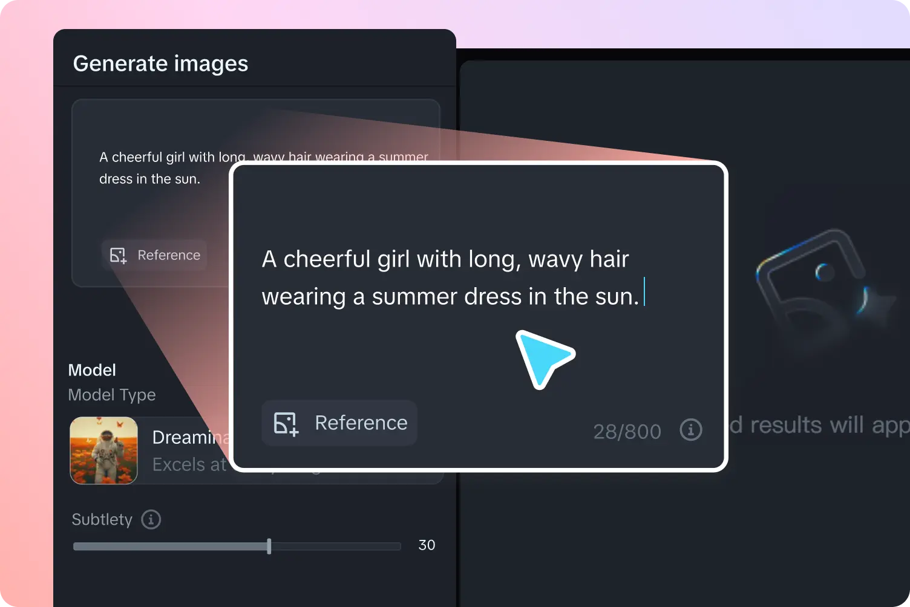
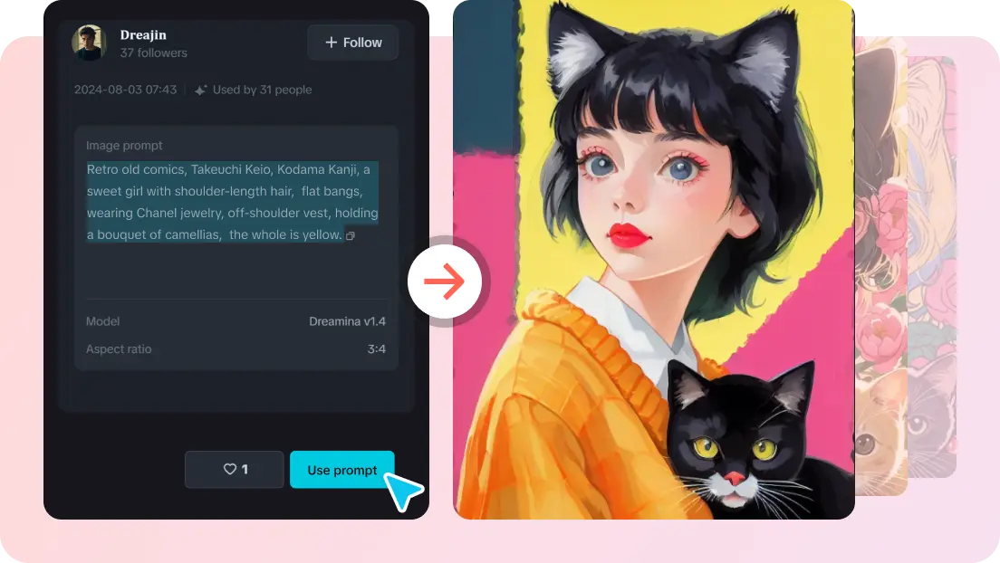

Dreamina 速查：从出第一张图到做完整条视频
整理了 Dreamina 新手最常问的九个问题——它是什么、怎么出图、社区怎么玩、配乐怎么加、商用行不行，一篇看完直接上手。
整理一篇关于 Dreamina 的快问快答——从注册到出片，替你把该问的都问了。
Dreamina 是什么？一句话能说清吗？
Dreamina 是字节跳动推出的一站式 AI 创作平台，你可以从它的官网直接注册体验。平台覆盖文生图、图生视频、视频自动配乐、数字人口播等整条创作链。国际版叫 Dreamina，国内版即梦，核心模型是自家的 Seedream（图像）和 Seedance（视频）。
它不是单一工具，而是把从灵感收集、素材生成、后期加工到成片输出的所有环节串在同一个界面里——你在别处可能要跨三四个应用才能完成的事，在 Dreamina 里一条链路走到底。
谁该用它？谁又不太需要？
两类人最适合：一是想快速产出视觉内容但没有专业设计/剪辑功底的创作者，比如社媒运营、独立博主、小团队市场；二是需要高频出样做创意验证的设计师，用它先出十版方向再进 Photoshop 精修，效率差着一个量级。
不太需要的是已经有稳定工作流的专业团队——比如正经影视后期、职业插画师，他们有成熟的工具链和技能树，Dreamina 作为补充而非替代。另外如果你的创作完全不涉及视觉（纯文字、音频），也没必要入坑。
怎么开始？第一张图几分钟能出吗？
能。先从下载获取应用，然后按官方给的最小流程三步走，实测也确实几分钟搞定。
第一步进 Image generation 分区写提示词。新手最容易犯的错是提示词太短——「a cat」当然能出图，但出什么猫全凭模型心情。一个靠谱的句式是：主体 + 外观特征 + 环境光照，三要素交代清楚，比如「A cheerful girl with long, wavy hair wearing a summer dress in the sun」。

第二步设参数生成。分辨率直接拉高（3840×2160 或 4000×3000 起），省得后期放大；比例看用途——正方形发帖、竖版出壁纸/封面、横版做横幅。点 Generate 后一次出四张候选，通常 20 到 40 秒完事。
第三步编辑导出。满意就直接下载；不满意原地改：Inpaint 框选重绘局部、Expand 往外扩画面、Remove 抹掉干扰元素。需要更细调整就进 Canvas，那是另一个天地。
社区画廊和「一键同款」到底怎么玩？
这是 Dreamina 最容易被低估的功能——它的 Explore 画廊不是简单的作品墙，而是一条学习路径。官方定位就是「找到喜欢的作品 → 看它的提示词与参数 → 复用改写 → 生成自己的版本」。
操作链路四步：进画廊按热门/风格/题材找目标；查看原作的提示词和参数（这部分完全公开，相当于海量已验证的提示词库）；加载原配置后替换核心元素——猫咪换狗狗、古风换赛博朋克，结构和风格词保留；点生成就得到风格一致但内容属于你的作品。

为什么说这是新手最佳起点？因为它帮你绕过了冷启动——从已经出好图的配置开始，比从空白框开始成功率高得多。而且看十张同类作品的提示词，比看十篇教程更快摸到写法规律。但有一条文明线：改核心元素没问题，像素级复刻他人商业作品就越界了，既违反社区礼仪也可能碰版权，更细节的社区规范在Dreamina文档里写得更全。
图生成视频是什么体验？要额外加钱吗？
图生视频是 Dreamina 的核心能力之一，用的是 Seedance 模型。你给一张图，它帮你把画面动起来——人物转头、发丝飘起来、镜头推进，常见的运动幅度和节奏都能驾驭。
参数上主要是时长和运动幅度。默认出三秒片段，够做社媒素材；运动幅度太低画面僵，太高则容易变形，中间档位通常是最稳的。如果你的图本身构图就好，生成的视频质量会明显上一个台阶——模型对「好底子」的利用效率远高于构图混乱的图。
计费方面走平台的积分/会员体系，文生图和图生视频消耗不同档位的额度，视频通常更贵一些。具体档位和水印规则要看你当时的订阅状态，免费档带水印，付费档可以去掉。
成片自动配乐靠谱吗？会不会和画面脱节？
Dreamina 的 Generate Soundtrack 工具是成片链路的最后一块拼图，用它给已经生成好的视频自动配一段贴合画面情绪和节奏的背景音乐。
两种用法。全自动模式点生成就行，AI 会分析视频的运动节奏和情绪基调，产出匹配的曲目，适合快速出片。定向模式则给你四个维度手动选方向——类型（电子/管弦/民谣）、主题（史诗感/温馨/悬疑）、情绪（明快/低沉/梦幻）、乐器（钢琴/鼓组/弦乐），适合对配乐有明确想法的场景。
实操上有几个小技巧：节奏型内容先定 BGM 再做画面，音乐节拍决定剪辑点，效率更高；情绪匹配听前五秒就够，开头不对后面怎么调都违和；发布时别忘了社媒自动播放常默认静音，BGM 再好也别指望它撑起全部信息量，画面叙事要独立成立。
生成的内容能商用吗？有什么坑？
官方口径很审慎——没有一个放之四海皆准的「能」或「不能」，要按情况看。主要确认四件事：
一是平台条款。商用权限可能和订阅档位挂钩，免费档通常有限制，条款会更新，以你使用当下的最新版为准。
二是模型和素材来源。自研的 Seedream/Seedance 和第三方接入的 GPT Image、Nano Banana 等，商用授权口径可能不同。最大的风险点是参考图和上传素材的授权——拿别人的作品当参考、拿网图做风格迁移、用他人肖像做数字人口播，这些素材必须自有权利或已获授权。
三是版权认定。纯 AI 生成无人类创作的部分，某些法域可能不获版权保护；人类的创造性贡献（提示词设计、素材编排、后期修改）通常影响权利认定。涉及具体法域的商业决策，咨询专业人士。
四是发布平台规则。多数社媒和广告平台对 AI 生成内容有标识要求，按要求勾选「AI 生成」标注，避免限流。
本站的建议姿势也简单：免费档试产、付费档商用；素材链路留痕，参考图从哪来、音色谁授权、脚本谁写的，留痕成本远低于事后纠纷；名人肖像、知名 IP、竞品商标这些灰色地带，哪怕模型能生成也别碰。
和同类工具比，Dreamina 的优势在哪？
最大的优势是全链路整合。很多竞品要么强在图像（Midjourney）、要么强在视频（Runway）、要么强在编辑（CapCut），但 Dreamina 把图像、视频、配乐、口播、后期都塞在一个界面里，数据不用跨工具搬运。文生图的结果可以直接拖进视频生成，视频成片后直接配 BGM，这条链路的流畅度是它独有的。
第二个优势是社区生态。一键同款的设计让新手能快速复用成熟配方，画廊本身就是一个海量的、已经被社区验证过的提示词库——这比让用户自己从零开始试错，留存率和产出质量都高得多。
模型层面，Seedream 和 Seedance 的表现属于第一梯队，尤其在中文场景和东方人脸的处理上，比一些海外模型更稳定。当然，具体效果还是看你用在什么场景——每个模型都有自己的审美偏好和擅长领域。
免费档够用吗？什么时候该升级付费？
免费档的核心限制是水印和积分额度。带水印的素材直接排除了商用可能，社媒发帖勉强能用但品牌感打折；积分额度限制了生成次数，重度用户会很快耗尽。
升级付费的触发点通常有两个：一是你需要去水印——不管是商用还是发正式内容，水印都很碍眼；二是你开始高频出内容，免费额度不够用了。付费档的具体权益要看当时的套餐设计，一般都会解锁更高分辨率、更多积分、更快的生成速度（排队优先级）。
还有一个隐形升级信号：当你发现自己开始反复用一键同款改同一个系列的作品，或者需要批量出风格统一的素材时，付费档的效率优势会开始显现。
有没有常见的坑要提前避？
有三个最常见的：
提示词要么太短要么太啰嗦。太短（「a cat」）等于让模型随机发挥；太啰嗦（把十个形容词堆在一起）模型会丢失重点。主体 + 特征 + 环境三要素的结构最稳，一两句说清比长篇大论管用。
参考图没授权就用。这是商用场景最大的雷区。网图、名人肖像、知名 IP 形象，哪怕模型能生成也别碰——技术能力不等于授权。自建素材库或用平台自带素材是安全路线。
一键同款改过头。改核心元素（主体换了、场景换了）是官方鼓励的；直接复刻别人的商业作品、冒充原创，既违反社区礼仪也可能侵权。记住：原作是配方，不是你的成品。
最后一句：Dreamina 适合想快速上手 AI 创作、不想在工具间来回切换的人——从第一张图到完整视频，一条链路走到底，值得装。
这套创作资料我在 Git 仓库那边也同步了一份，方便不同网络环境下查阅：国内访问不稳的选Gitee，看重社区生态和 issue 讨论的可以去GitHub，想试试新兴平台的不妨逛逛GitCode。